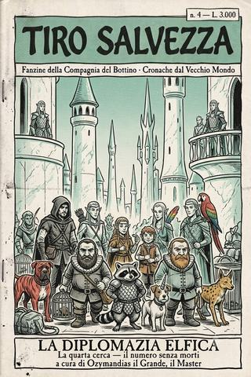

Tiro Salvezza · numero IV
La diplomazia elfica
Numero quattro della fanzine della Compagnia del Bottino: un'ambasceria a Ulthuan, uno zoo di animali inutili, un museo di cere troppo somiglianti, due nani venduti come spie, e un portale che sbaglia clamorosamente indirizzo. Il numero in cui, per una volta, non muore nessuno.
- ≈ 25 min di lettura
- Ozymandias il Grande
- dalle partite a D&D 5ª ed.
- anche in EPUB, 2,8 MB
Editoriale — numero quattro
TIRO SALVEZZA — fanzine della Compagnia del Bottino · rubrica «Cronache dal Vecchio Mondo»
Respirate. Ve lo concedo, e me lo concedo: questo è il numero senza morti.
Dopo la torre di ossa avevamo tutti bisogno di una pausa — io per primo, che di registri dei morti, in due numeri, ne avevo riempiti abbastanza da sentirmene le dita sporche d’inchiostro. E così, quando il conte Darian ha mandato la Compagnia del Bottino in ambasceria a Ulthuan, il regno chiuso degli alti elfi, ho colto l’occasione e li ho lasciati fare ciò che sanno fare meglio quando nessuno cerca di ucciderli: spendere, litigare e cacciarsi in guai che non fanno male ma costano un occhio.
Ne è venuto fuori il numero più allegro della collana. C’è un nano che vuole comprare l’intelligenza a un procione. C’è un elfo che vola su un serpente marino con un tempismo perfetto e perfettamente inutile. C’è un museo di statue di cera un po’ troppo somiglianti, e un assistente che guarda le nostre eroine con la fame sbagliata. C’è un’intera compagnia venduta come servitù a un popolo che la considera, nel migliore dei casi, un animale domestico ben addestrato.
E poi, in fondo, c’è una porta. Perché con questa gente c’è sempre una porta, e con questa gente si apre sempre. Solo che stavolta, invece di un mostro, dall’altra parte c’erano le stelle sbagliate e un mare che stava dalla parte che non doveva. Dove siano finiti, e perché per due di loro quel posto sbagliato fosse insieme casa e condanna, ve lo racconto nel prossimo numero — quello in cui i morti, ahimè, riprendono a contarsi.
Godetevi la tregua. Nel Vecchio Mondo non durano mai.
— Ozymandias il Grande, il Master
Sommario
- La diplomazia elfica (4ª cerca) — La Compagnia del Bottino va in ambasceria a Ulthuan, con un carico di armi magiche, due nani-spia e uno zoo di bestie inutili. Tra Altdorf, Marienburg e il mare aperto, l’unica cosa che nessuno mette in conto è la porta che porta nel posto sbagliato. (Un numero senza un solo funerale — approfittatene.)
Linea temporale
Dove siamo nella campagna della Compagnia del Bottino. In grassetto ciò che leggerete in questo numero.
- 1ª e 2ª cerca — I pirati del Talabec (n. 1)
- 3ª cerca — La torre di ossa + Il principe delle sabbie — Sylvania (n. 2 e 3)
- 4ª cerca — La diplomazia elfica — Talabheim → Altdorf → Marienburg → il mare → Ulthuan. (Nessun morto: il registro resta a otto.)
- 5ª cerca — L’invasione di Ulthuan — dove il portale li ha davvero portati. (prossimamente, n. 5.)
Fili lasciati aperti: i due nani-spia a Ulthuan e il braccialetto in mano a Ridley; il museo delle cere di Marienburg (Cechov ancora appeso); lo zoo di animali assurdi; e il portale sbagliato che ha spedito la compagnia sotto stelle che non conosce — dove due di loro, senza saperlo, sono nati.
La diplomazia elfica
Cronaca della quarta cerca della Compagnia del Bottino. Un’ambasceria, una torma di animali inutili, e un portale che sbagliò clamorosamente indirizzo. A cura di Ozymandias il Grande, il Master.
Dall’Impero al mare interno di Ulthuan. Il numero in cui, per una volta, non muore nessuno.
Prologo — Un numero senza morti
Devo cominciare con una notizia che a me stesso, rileggendo il registro, pare incredibile: in tutta questa cerca non muore nessuno. Nemmeno un nano. Sedetevi, riprendetevi dallo shock, e godetevela, perché non ricapiterà tanto presto — e perché, come ogni Master sa, il numero senza morti è quello in cui si preparano tutti quelli con.
Dopo la torre di ossa avevo bisogno di far respirare i miei ragazzi, e loro avevano bisogno di spendere. Sono queste le due cose che tengono in vita una compagnia di avventurieri tra un massacro e l’altro: il respiro e lo shopping. E siccome il conte Darian aveva per loro un incarico che non prevedeva né sotterranei né morti che camminano, ma soltanto un lungo viaggio verso il posto più altezzoso del mondo conosciuto, colsi l’occasione e li lasciai fare. Ne venne fuori la commedia più pura di tutta la campagna, e insieme — perché con questa gente il seme del disastro si pianta sempre nelle scene allegre — la premessa di tutto ciò che sarebbe andato storto dopo.
Vi avverto, come è mio costume, di ciò che troverete: un procione con l’armatura, un elfo che vola su un serpente marino, un museo di statue di cera un po’ troppo somiglianti, due nani venduti come schiavi per una buona causa, e in fondo a tutto un portale che, dovendo portarli in un posto, li portò esattamente in quello sbagliato. Ridete pure. È il numero fatto apposta. Ma tenete d’occhio le statue di cera, e tenete d’occhio le stelle, alla fine. Perché quando le stelle sono sbagliate, nel Vecchio Mondo, di solito è perché non siete più dove credevate di essere.
Capitolo primo — I doni del conte
Tornarono a Talabheim stanchi, mal vestiti e assai poco profumati — un mese di torre di ossa non giova alla fragranza —, e furono accolti a palazzo con tutti gli onori dal conte Darian, dall’ambasciatore elfico Guriolas e dal solito Alrik Kiomarossa, sponsor dei nani partiti a suo tempo e, a quanto pareva, defunti nell’impresa. Ci fu un momento di silenzio per i caduti, o quello che in questa compagnia passa per tale: Alrik prese in consegna l’ascia di Rotland Scudo di platano — sì, quello che se ne era andato camminando dentro un portale di sabbia — per affidarla al proprio forgiarune e renderla «degna di un nano eroico». Che l’eroe in questione stesse in quel momento servendo un re morto in una città del deserto è un dettaglio che nessuno ritenne di comunicare al forgiarune, e che io annoto qui perché è il genere di ironia di cui si nutre la mia professione.1
Poi venne l’incarico, ed era di quelli grossi: portare un’ambasceria nientemeno che a Ulthuan, il regno degli alti elfi in mezzo all’oceano, su richiesta dell’imperatore Karl Franz e in risposta all’invito del re fenice Finubar il Navigatore, colui che dopo secoli e secoli aveva finalmente socchiuso le porte del suo regno alle altre razze. Un onore storico. E, come tutti gli onori storici, un pretesto: perché quando il gruppo si divise per razza a ricevere le vere istruzioni, ciascun patrono scoprì le proprie carte.
Alrik, davanti a una birra speziata, spiegò ai due nani la parte meno onorevole del piano. Sarebbero entrati a Ulthuan — primi del loro popolo a farlo — solo a una condizione: travestiti da servi, vincolati magicamente a uno degli umani della spedizione. L’umiliazione era grande; ma grande era anche il premio, perché nessun nano aveva mai potuto raccogliere di persona informazioni sul regno elfico — la geografia, le difese, la reale forza militare e magica del nemico di sempre, dai tempi remoti della guerra delle barbe.2 Il vincolo magico fu affidato a Ridley, giudicata la più amichevole verso i nani e la più sensibile alle ricompense auree: le fu consegnato un braccialetto che comandava i collari di sottomissione dei due, e vi assicuro che raramente ho visto un giocatore accarezzare un oggetto con più tenerezza di quanta ne mise Ridley in quel braccialetto. Il potere, in questa compagnia, si misura in oro e in guinzagli, e lei ne aveva appena ottenuto uno di ciascuno.
Anche gli elfi, in privato, ricevettero la loro parola, e fu Guriolas a dargliela, con quella condiscendenza melliflua che negli alti elfi tiene il posto dell’affetto. Ricordò loro il peso che stavano per assumersi — accompagnare, sorvegliare e all’occorrenza scusare i membri meno raffinati della spedizione, cioè tutti gli altri — e insinuò, senza dirlo, che il vero scopo di un’ambasceria elfica non è portare un messaggio ma mostrarsi: farsi vedere magnifici, superiori, insostituibili, così che l’invito a Ulthuan diventi, agli occhi dell’Impero, un privilegio e non un patto tra pari. La diplomazia elfica, in altre parole, consiste nell’essere ammirati con tale intensità da far dimenticare all’altro che stava trattando. È una scuola sottile, e i nostri elfi ne erano allievi di talento naturale, avendo passato la vita a esercitarsi sui compagni di tavolo. Che poi, sotto il merletto, ciascun popolo stesse mandando i propri a spiare gli altri, non guastava affatto l’eleganza della cosa: nel Vecchio Mondo la buona educazione e il tradimento vanno a braccetto da così tanto tempo che nessuno li distingue più.
Nel frattempo il conte Darian portava gli umani nella sala dei trofei a rifornirli, e Guriolas faceva lo stesso con gli elfi, e fu una pioggia di armi magiche che elenco per dovere di cronaca e per futura memoria, perché ognuna di esse tornerà. A Forsand toccò la lama di Kobla, che fende le armature; a Ridley la daga Zanna di Khaine, mortale per gli elfi e capace di fiutare ogni essere vivente nascosto o invisibile; a Eryn Goldenleaf lo stocco Acciarinolas, la cui lama d’acciaio muta in fiamma; ad Ardal le lame gemelle Fendispalle di Dabbhoz Cuordiletame, che occultano chi le impugna; a Gionatan la lama dell’idra, che si sdoppia come la creatura da cui prende nome; a Endia frecce a fiamma magica; e a Gigi d’Alessios, che aveva chiesto — giuro — un «mandolino magico» per cantare serenate, un anello che cattura e rilancia gli incantesimi di fuoco, dato che di mandolini incantati la sala dei trofei difettava.3 Sette armi maledette di un dio del Caos, e ora anche un arsenale di doni imperiali. La Compagnia del Bottino non era mai stata così ben armata, né così poco preparata a usarlo con criterio.
Capitolo secondo — Il collegio dell’oro
Il viaggio fluviale lungo il Talabec fino ad Altdorf, la capitale, durò dieci giorni e filò liscio; il che, con questa gente, significa soltanto che il disastro stava accumulando fondi per un investimento più grosso. Lo fece a terra. Perché appena sbarcati nella capitale, i nostri si cacciarono nei guai nel modo più costoso e meno pericoloso possibile: comprando.
Cominciò un nano — chiamiamolo lo spaccaferro, ché il nome cambia meno del suo umore — il quale, in preda ai fumi dell’alcol o di qualcosa di peggio, decise che a un guerriero di razza serviva un animale da guerra, e comprò un procione. Un procione. Poi, non pago, pagò un armaiolo uno sproposito per forgiargli un’armatura su misura, e si mise in testa di portarlo al collegio della magia dorata — la scuola d’alchimia e magia del metallo dell’Impero, un edificio di ciminiere e fucine lungo il fiume — perché un mago gli elevasse l’intelligenza «al livello del padrone», sforzo che, come osservai dietro lo schermo, non richiedeva un gran mago. Rinsavì all’ultimo, appena prima di rischiare di finire lui trasmutato nel sogno segreto di ogni nano, cioè in oro puro.4
La follia, purtroppo, è contagiosa come il raffreddore e assai più cara. Contagiò Nico Barbarossa, che allo zoo imperiale comprò un molosso striato delle malelande — un cane con striature rosso fuoco, temibile predatore d’oltremonte, e per sole centocinquanta monete, occasione da nano. Contagiò Gionatan, il quale — da elfo furbo, o da mezz’elfo che tale si spaccia — volle spendere poco e da un mercante esotico venuto per la via della seta ottenne un magnifico «Unicane», con un cornetto tutto luccicante di magia, allegro e scodinzolante; e non pago dell’unicane, si aggiunse uno sciacallo maculato del sud, perché era puccioso e perché — cito — poteva farsi bello con le elfe.5 Contagiò Endia, che vagò per le voliere in cerca di cocorite e pettirossi addestrati da riporre nello zaino in caso di emergenza, e Ardal, che cercò rane velenose da gettare in faccia agli avversari senza avere la più pallida idea di come fossero fatte. E contagiò Shava Nahlo, la quale, per non essere da meno delle socie in fatto di animaletti da borsetta, si spinse nei vicoli del «mercato nero legale» e da un untuoso mercante dai baffetti da faina, tal Fidat-Hi, comprò un cangiante uccello arcobaleno dell’Ind, con tanto di sconto per la graziosa faccina. Tenetelo a mente, quell’uccello. Diventerà, col tempo e col Caos, qualcosa di molto più luminoso e molto meno rassicurante. Ma non anticipiamo.
Il risultato di tutta questa frenesia fu che la Compagnia del Bottino ripartì da Altdorf trascinandosi dietro uno zoo. Un procione corazzato che tentava di aprire ogni cassa a portata di zampa, un molosso striato che ringhiava a chiunque non fosse un nano, un unicane che scodinzolava a chiunque lo fosse, uno sciacallo maculato, un uccello arcobaleno e un assortimento di cocorite e roditori che Endia si era ripromessa di addestrare «per le emergenze». Le affidarono, in effetti, l’incarico di ammaestrare il procione di Borik in vista delle battaglie future, e vi lascio immaginare quante battaglie future si vincano con un procione ammaestrato: nessuna, è la risposta, ma il conteggio delle cose inutili che questa gente porta in guerra è uno dei pochi registri che ho smesso di tenere, per manifesta impossibilità di stargli dietro. Un avventuriero saggio viaggia leggero. La Compagnia del Bottino viaggiava come un circo di provincia in trasferta, e ne era orgogliosa.
Capitolo terzo — Il museo delle cere
Imbarcatisi sul Reik verso Marienburg — la grande città portuale che è dell’Impero solo sulla carta e dei suoi ricchissimi mercanti nei fatti —, i nostri, per una volta, viaggiarono da signori, e interagirono coi facoltosi passeggeri con risultati misti. Il più memorabile fu l’incontro con Wilbert Ree, maestro scultore di cere iperrealistiche di Marienburg, che affascinò Shava Nahlo e Ardal con le sue maniere da nobile dai lunghi capelli — e in questa compagnia, sappiatelo, i lunghi capelli sono una credenziale che apre più porte di qualsiasi lignaggio — e le convinse a posare come modelle per il suo museo, dietro compenso.
Al museo, va detto, qualcosa non tornava, e lo dico con la calma di chi tiene i registri e sa riconoscere una casella vuota quando la vede. Le statue erano di due tipi: alcune perfette, dipinte, magnifiche; altre — e queste erano le più credibili — rivestite di abiti veri, in pose così naturali da sembrare sul punto di respirare. La differenza tra una statua magnifica e una statua credibile, in un museo di cere, è una di quelle cose su cui è meglio non indagare troppo, e i nostri, fedeli alla loro vocazione, non indagarono affatto: sventolarono il compenso sotto il naso di Endia finché anche lei accettò di posare, ignorarono l’assistente viscido e mellifluo che la squadrava come si squadra una bistecca, incassarono fiorini imperiali e scudi bretoniani, ricevettero in dono i modellini in scala, e si assicurarono di essere richiamate in futuro per altre pose.6 Endia rimase vagamente a disagio — l’assistente la fissava troppo, notò, forse perché lei era meno attraente delle socie, il che nella sua testa era l’unica spiegazione preoccupante possibile. Che ci fosse un’altra spiegazione, e assai più preoccupante, non sfiorò nessuno di loro. È là, quella spiegazione. La lascio là. Le cose migliori, in una campagna, sono quelle che si lasciano là, a maturare.
Chiuse la serata un ballo, in cui le nostre eroine, malgrado il bell’aspetto, dimostrarono di non avere — come si dice — il piede di fata, ma più il piede d’orco; e su questo stendo un velo pietoso, perché un cronista onesto deve sapere anche quando tacere, e di certe coreografie è meglio non resti memoria scritta.
Capitolo quarto — La nave-falco
A Marienburg presero alloggio, grazie alla lettera di Guriolas, nientemeno che al grande Casinò Elfico, dove le elfe andarono a sperperare i magri risparmi di primo mattino e il «melodico duo» — Eryn e Gigi, ormai inseparabili nella loro capacità di suonare al momento sbagliato — studiò a lungo l’imponente nave-falco che di lì a pochi giorni li avrebbe portati oltre l’oceano. Poi salparono sulla Luce di Isha, e la costa dell’Impero si allontanò verso il grande mare.
Furono oltre venti giorni di navigazione, e ve li riassumo negli unici tre fatti che contano. Primo: Borik Collepiatto soffrì di mal di mare in una misura che solo la ricetta segreta dei nani marinai — un intruglio anti-nausea a base di sostanze innominabili macerate nella grappa — riuscì a contenere. Secondo: il melodico duo si rifugiò per giorni in coffa, sull’albero maestro, a cantare le meraviglie del mare con tale insistenza che i due nani cominciarono a studiare, la notte, come farli sparire senza lasciare tracce, fermati solo dal braccialetto di Ridley e dal suo garbato ricordare chi comandasse i loro collari. Terzo, e più glorioso: la tempesta.
Perché all’orizzonte si palesò una tempesta, e con la tempesta due colossali serpenti marini, emersi a caccia di carne fresca e speziata. La battaglia infuriò breve e violenta; fu l’archibugio a retrocarica di Borik ad abbattere il primo mostro, mentre l’altro duellava coi compagni. E qui va reso onore a Eryn Goldenleaf, che ebbe un autentico rigurgito di eroismo: in preda al sacro fuoco del suo idolo, l’immortale bardo Errol Flynn, si gettò dalla coffa con una sola corda ad assicurarlo, puntando alla testa del serpente per trafiggerlo — chiedendosi, a mezz’aria, se il suo anello di camminare sulle acque l’avrebbe salvato dall’annegamento o spiaccicato sul mare come sul selciato, in caso di errore.7 Il dio protettore dei bardi, o degli stolti, gli sorrise: atterrò con grazia sul collo del mostro, pronto a colpire — e il serpente morì proprio in quell’istante, per tutt’altra mano, lasciandolo appeso alla corda a sbatacchiare contro la fiancata della nave, eroe di uno scontro già finito. È, a suo modo, la carriera intera della Compagnia del Bottino in una scena sola: il gesto magnifico che arriva un attimo dopo che non serviva più. Il comandante, fiutando che tempeste simili sono il paravento preferito degli elfi oscuri per le loro Arche nere, mise più vele possibili e cavalcò il fronte del temporale, sfuggendo a un agguato che i nostri non seppero mai di aver corso.
Seguirono giorni di paura sorda, in cui la nave filava veloce e ogni cresta d’onda all’orizzonte poteva essere una vela nera. Ma l’agguato non venne, e la Compagnia del Bottino tornò alle proprie occupazioni, che in mare aperto si riducevano a tre: gli elfi ad annoiarsi con eleganza, i nani a rimpiangere la terraferma e le proprie navi a vapore — che Nico Barbarossa, da figlio di Barak Varr, giudicava incomparabilmente superiori a quei gusci profumati di legno elfico —, e il melodico duo a suonare. Su quest’ultimo punto devo un chiarimento ai posteri: quando scrivo che Eryn e Gigi «suonavano», non intendo un intrattenimento, ma un assedio. Suonavano al mattino le meraviglie dell’alba, al tramonto la malinconia del largo, di notte la nostalgia di casa, e nei rari momenti di silenzio provavano pezzi nuovi, che erano come i vecchi ma peggio. I marinai ne erano deliziati, il che dice tutto sulla vita che fa un marinaio. I due nani, invece, passarono la traversata a elaborare piani sempre più dettagliati per farli sparire in mare senza lasciare tracce, e se non li misero in atto fu solo perché Ridley, con un lieve tintinnio del braccialetto, ricordava a intervalli chi tenesse in pugno i loro collari. È il genere di equilibrio su cui si reggono, in fondo, tutte le diplomazie: non l’amore tra i popoli, ma la reciproca, sorvegliata impossibilità di strozzarsi a vicenda.
Capitolo quinto — Lothern
Giunsero infine in vista di Lothern, la capitale marittima di Ulthuan, con le sue mura di pietra bianca custodite da schiere di multibaliste e la sua flotta oceanica alla fonda. Ad accoglierli, un severo guerriero elfico che si presentò come Eltharion, il Guardiano di Tor Yvresse, accompagnato da un anziano schiavo umano interprete, Gregor. E qui la Compagnia del Bottino imparò, con suo grande disgusto, cosa significhi essere ospiti graditi di un popolo che vi considera, nella migliore delle ipotesi, animali domestici ben addestrati.
Furono alloggiati in una lussuosa villa sulla baia, e informati delle condizioni del soggiorno: solo gli elfi potevano uscire, e sempre scortati; tutti gli altri dovevano restare all’interno «per la loro sicurezza», serviti dagli schiavi umani del palazzo. I due nani, ristretti al ruolo di servi vincolati, provarono subito a violare la consegna e furono scoperti con imbarazzante facilità, rassegnandosi a ubriacarsi di pessimo vino elfico in attesa di novità, mentre le elfe passeggiavano per i mercati facendo costosi acquisti di roba alla moda e il solito Eryn cercava droga perfino lì, non rendendosi conto della follia della cosa.8 Ma è sui due nani che l’ospitalità elfica mostrò il suo volto peggiore, ed è lì che si piantò il seme del guaio. Ridotti al ruolo di servi vincolati, Nico e Borik dovettero incassare, giorno dopo giorno, la squisita crudeltà con cui un alto elfo tratta ciò che considera inferiore: non l’insulto — l’insulto presuppone un pari —, ma la cortese, inesauribile condiscendenza di chi ti spiega le cose lentamente perché è certo che tu non le capisca. Fu servito loro cibo da servi, assegnato un alloggio da servi, rivolta la parola come si rivolge a un cane bene ammaestrato; e ogni sorriso elfico che accompagnava tutto ciò pesava più di uno schiaffo. I nani incassarono, perché la missione lo esigeva e perché il braccialetto di Ridley non lasciava alternative; ma un nano che incassa un torto non lo perdona: lo deposita, come deposita l’oro, e aspetta gli interessi. Anche Ridley, per parte sua, cominciò a covare qualcosa. Non era nobiltà d’animo — non fraintendetemi, non era mai nobiltà d’animo —, ma quella sorda insofferenza dell’umana pratica costretta a strisciare in casa di gente profumata che la guarda dall’alto. E quando una ladra insofferente si annoia in una casa piena di segreti, il seguito, credetemi, si scrive da sé.
Fu, per qualche giorno, una prigionia dorata e noiosa. E la noia, in questa compagnia, è la più pericolosa di tutte le condizioni, perché è l’unica cosa da cui i nostri fuggono sempre, a qualunque costo — anche a costo di aprire l’ennesima porta con su scritto «non aprire».
Capitolo sesto — La porta sbagliata
Fu Ridley a trovare la porta, perché Ridley, quando si annoia, sparisce — e sotto il mantello dell’invisibilità perlustrò la villa in ogni anfratto. Trovò prima una cosa che avrebbe dovuto insospettirla: nel parco, una pietravia, un obelisco runico capace di incanalare i venti di magia, che pareva messo lì apposta per disturbare gli incantesimi all’interno della villa — come se qualcuno volesse ospiti magicamente impotenti. Poi, seguendo un servo nelle cantine, trovò la cosa che cercava senza saperlo: un passaggio magico, che il servo attivava con un complesso movimento delle dita per svanire chissà dove.9
Stufa di obbedire a profumati rekkiapunta ornati di merletto, e certa dell’appoggio dei nani — con le buone o col braccialetto —, Ridley memorizzò il gesto e convinse tutti a seguirla nel passaggio. E qui devo fermarmi, perché è il momento in cui, dietro lo schermo, sorrisi di quel sorriso particolare che i Master conoscono bene: quello di chi sa dove porta una porta, e lascia che i giocatori la aprano. La aprirono. La Compagnia del Bottino si infilò nel passaggio con la fiducia di chi crede di sapere dove sta andando, e sbucò in un oscuro pertugio roccioso che dava su un costone e, oltre, su una spiaggia lontana.
Solo che le stelle non erano al loro posto. E il mare — che a Lothern stava a sud — adesso era a nord.
Ridley, che di tutti era la sola a leggere il cielo, sentì un freddo che non veniva dal vento. Dove li aveva portati, quel passaggio? Non a Ulthuan, o non alla Ulthuan che conoscevano. E cos’era, laggiù all’orizzonte, quella creatura alata che attraversava il tramonto con calma spaventosa, dirigendosi da qualche parte con lo scopo evidente di chi è a casa propria? Nessuno di loro lo sapeva. Due di loro avrebbero dovuto — perché due di loro, in quella terra, ci erano nate — ma non lo sapevano ancora nemmeno loro. E io, dal mio schermo, chiusi la seduta esattamente lì, sul mare sbagliato e sotto le stelle sbagliate, perché un Master che sa fare il proprio mestiere sa anche che il posto giusto per fermarsi è sempre un attimo prima che i giocatori capiscano in che guaio si sono cacciati.
Epilogo — La calma prima
Chiudo il conto di questa cerca, e per la prima volta la colonna dei nomi resta vuota. Nessun morto. Ve l’avevo promesso in apertura, e ho mantenuto: un intero numero senza un funerale, cosa così rara, in questa campagna, da meritare essa stessa una nota a margine. Godetevela, perché il registro dei morti, quando resta fermo, non riposa: prende fiato.
Ma il registro dei morti non è l’unico libro mastro che tengo, e gli altri, quella cerca, si riempirono parecchio. Nella colonna degli arsenali: un intero corredo di armi imperiali, ad affiancare i doni del Caos. Nella colonna dei guinzagli: due nani venduti come schiavi per spiare un regno, e un braccialetto in mano a una ladra che ha scoperto quanto le piaccia comandare. Nella colonna delle cose lasciate a maturare: un museo di cere di Marienburg dove certe statue somigliano troppo, e un assistente che ha guardato Endia con la fame sbagliata. E nella colonna che non so ancora come intitolare, la più grossa di tutte: un portale che, dovendo portarli a Ulthuan, li ha portati altrove — in una terra dove il mare sta a nord e le stelle sono sbagliate, e dove due della compagnia, senza saperlo, sono tornati esattamente là dove sono venuti al mondo.
Ma di quale terra si tratti, e di cosa vi trovarono, e di perché per due di loro fosse insieme casa e condanna, vi dirò nella prossima cerca. È la più strana di tutte, e l’unica che si concluda con gli elfi che, per essere sicuri che nessuno racconti ciò che ha visto, decidono di cancellarlo dalla memoria di tutti. Compresa la mia, quasi. Ma io tengo i registri, e i registri, per fortuna o per sfortuna, non si cancellano.
Continua. E stavolta, temo, i morti riprendono a contarsi.
— Ozymandias il Grande, il Master
Da dove vengono queste storie
Queste non sono cronache ritrovate in una vecchia fanzine ingiallita, e «Ozymandias il Grande» — il Master che le firma — non le ha scritte davvero da solo. Sono nate dove nascono tutte le storie migliori: attorno a un tavolo.
I resoconti di questo volume vengono dai tavoli di gioco del Brainstorm Club, associazione di giochi di ruolo e da tavolo di Faenza (RA) — e, in particolare, dal tavolo dei più giovani. Dietro ogni canaglia di queste pagine — il druido che si trasforma nel momento sbagliato, il paladino che fa scattare ogni trappola, il bardo che suona quando dovrebbe tacere, il nano sventratore che carica da solo e non torna — c’è un ragazzo o una ragazza in carne e ossa, seduto a un tavolo vero, che una sera ha deciso cosa il suo personaggio avrebbe fatto. Il resto è soltanto trascrizione, con qualche bugia aggiunta per amore del ritmo.
Al Brainstorm Club si gioca da più di trent’anni, e non a un gioco solo: oltre a Dungeons & Dragons, ci si siede a Brancalonia, a Rogue Trader, ad Apocalypse World e a molti altri giochi di ruolo. Ma queste storie hanno una particolarità: nascono da una campagna condotta con i giocatori più giovani del club — bambini e ragazzi che, oltre a giocare, imparano a dirigere il gioco: a costruire mondi, a tirare i dadi dietro lo schermo, e a raccontare storie come queste.
Il club accoglie nuovi giocatori da tutta la Romagna, e tiene sessioni dedicate ai più giovani — bambini dai 9 ai 15 anni, ragazzi dai 16 ai 19. Se una di queste sedute vi ha strappato una risata (e magari un pizzico di dispiacere per l’ennesimo sventratore finito nel paiolo), ricordate che è cominciata con un tiro di dado e con qualcuno che, a un tavolo di Faenza, ha detto: «il mio personaggio, invece, fa così».
Brainstorm Club — Faenza (RA)
brainstormclub.it · info@brainstormclub.it
Note
Il forgiarune è, presso i nani, l’artigiano-sacerdote che lavora le rune nel metallo, e affidargli l’arma di un eroe caduto è un onore solenne. Che l’eroe non fosse propriamente «caduto» ma piuttosto «promosso a scheletro di servizio presso una dinastia del deserto» è una sottigliezza teologica che ho preferito non sollevare con Alrik, il quale, da buon nano, con la morte ha un rapporto rituale e con l’imbarazzo nessuno. La sua ascia sarà pronta, magnifica e runata, per un padrone che non tornerà a reclamarla. Le migliori armi dei nani, del resto, sopravvivono quasi sempre a chi le impugna. È il loro modo di essere immortali.↩︎
La guerra delle barbe — così la chiamano i nani, con una permalosità che dopo qualche millennio comincia a essere adorabile — è l’antica rottura tra il loro popolo e gli elfi, una faida talmente vecchia che entrambi la ricordano a memoria e nessuno dei due la sa spiegare senza dare la colpa all’altro. Contrabbandare due nani dentro Ulthuan per spiarne le difese è, in quella luce, meno un’impresa diplomatica che l’ennesima mossa di una partita cominciata prima che l’Impero avesse un nome. I nani non dimenticano un torto né un debito; ed è per questo che, di tutti i popoli del Vecchio Mondo, sono quelli con cui conviene di più pagare i propri conti in fretta.↩︎
Registro qui, una volta per tutte, l’arsenale distribuito, perché ogni pezzo tornerà e voglio potervi dire «ve l’avevo elencato»: la lama di Kobla che spezza le armature, la Zanna di Khaine che fiuta ogni vivo nascosto, l’Acciarinolas che si fa fiamma, le Fendispalle che occultano, la lama dell’idra che si sdoppia, le frecce di fuoco, l’anello che rimanda gli incendi. Sette doni imperiali che si aggiungono ai sette doni del Caos dell’ultima cerca. Quattordici oggetti magici in due mesi. Una compagnia meno fortunata di questa ci avrebbe fatto un impero. Loro ci fecero, prevalentemente, del rumore.↩︎
Il collegio della magia dorata pratica l’alchimia e la magia del metallo, e la trasmutazione in oro è, per un mago dorato, poco più di un esercizio da matricola. Che un nano si sia avvicinato a un simile luogo con in tasca la richiesta «rendetemi il procione più intelligente» e ne sia uscito senza essere stato tramutato in un lingotto è, statisticamente, il vero miracolo di questa cerca — assai più del serpente marino e del portale. Gli dèi vegliano sugli ubriachi, sui bambini, e sui nani con un procione. È un elenco più corto di quanto meriterebbe.↩︎
L’«Unicane» — un cane con un corno luccicante di magia, allegro e scodinzolante — è, per quanto ne so, una creatura che non figura in alcun bestiario serio del Vecchio Mondo, e sospetto fortemente che il mercante della via della seta l’avesse assemblata la mattina stessa con un cane, un corno e una notevole faccia tosta. Ma Gionatan lo pagò, e da quel momento la Compagnia del Bottino viaggiò con al seguito uno zoo che sarebbe stato il vanto di un circo di provincia e la disperazione di qualsiasi comandante di nave. Nessuno di quegli animali, tengo a precisare, cambiò mai le sorti di un solo scontro. Ma erano puccioni, e a questa gente, ogni tanto, basta quello.↩︎
Un maestro delle cere che veste le proprie statue con abiti veri e le rende «più credibili delle altre» sta o esibendo un talento straordinario o nascondendo un metodo assai poco artistico, e a Marienburg — città dove tutto ha un prezzo e molte cose hanno anche un secondo prezzo, quello che non si scrive — la seconda ipotesi non è mai da escludere. Non dico altro, perché in questa cerca non se ne seppe altro. Ma un buon cronista pianta i chiodi e non li batte tutti subito; e questo chiodo, appeso al muro del museo di Wilbert Ree, è di quelli destinati a reggere, un giorno, un quadro molto sgradevole.↩︎
Eryn Goldenleaf coltiva l’idea di essere un grande spadaccino e un grande musicista, e il bello è che ogni tanto — un istante su cento, per pura ostinazione della sorte — ha ragione. Il salto sul serpente fu uno di quegli istanti: tecnicamente perfetto, coraggiosissimo, e completamente inutile, perché il mostro morì prima che lo colpisse. È il paradosso dell’eroismo in questa compagnia: quando finalmente qualcuno fa la cosa magnifica, la fa sempre un attimo dopo che avrebbe contato. Lo annoto senza cattiveria. Anzi, con una certa tenerezza: perché saltare comunque, sapendo di essere quel tipo di eroe, è a suo modo la forma più pura di coraggio che io conosca.↩︎
Vale la pena registrare la lucidità con cui Eryn Goldenleaf cercò sostanze stupefacenti perfino a Lothern, capitale di un popolo che considera l’ebbrezza una volgarità e gli ospiti umani una concessione. È il genere di coerenza che, in un personaggio, si può solo ammirare: il bardo non adatta le proprie abitudini al contesto, adatta il contesto alle proprie abitudini, e se il contesto è il regno più chiuso e sospettoso del mondo, tanto peggio per il contesto. Che non sia ancora finito in un fosso di Ulthuan lo attribuisco alla stessa provvidenza che veglia sui nani coi procioni. Quella provvidenza, in questa campagna, fa gli straordinari.↩︎
La pietravia — obelisco che incanala i venti di magia — è tecnologia elfica antica e sottile, e piazzarne una a disturbare gli incantesimi dentro la villa degli ospiti dice, senza bisogno di parole, quanto gli alti elfi si fidassero della loro ambasceria: per nulla. Ospiti tenuti magicamente impotenti, sorvegliati, confinati «per la loro sicurezza». Ridley lo capì, e invece di trarne la lezione prudente — «ci temono, quindi comportiamoci bene» — ne trasse quella tipica della compagnia: «ci temono, quindi hanno qualcosa da nascondere, quindi c’è qualcosa da rubare». Aveva torto sul quando e sul dove. Ma sul fatto che ci fosse qualcosa da scoprire, ahimè per tutti, aveva ragione.↩︎
Preferisci leggerlo nel tuo lettore, o portartelo offline?
⤓ EPUB 2,8 MB